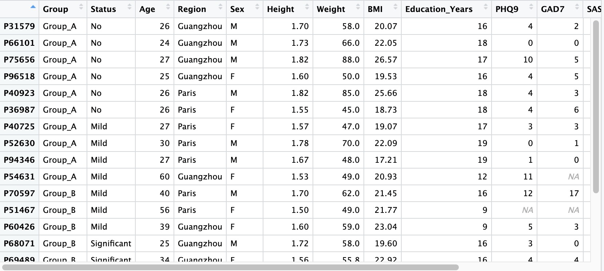
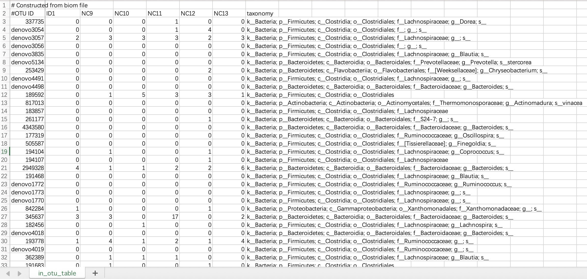
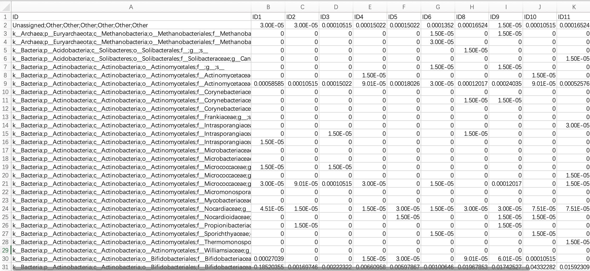
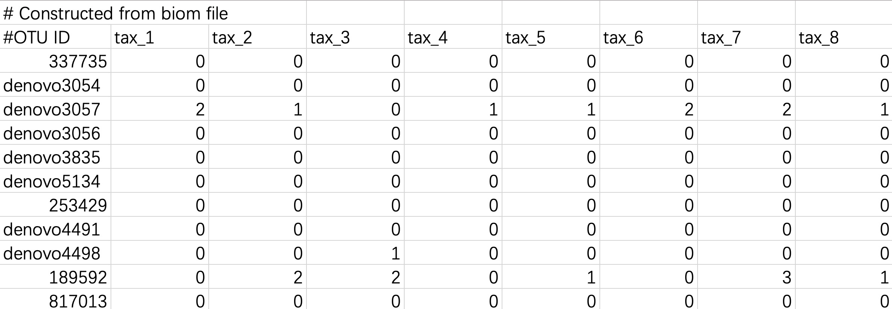
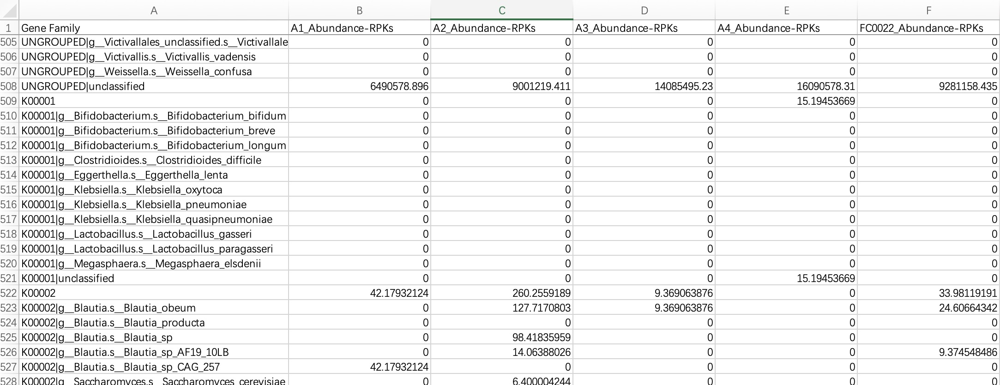
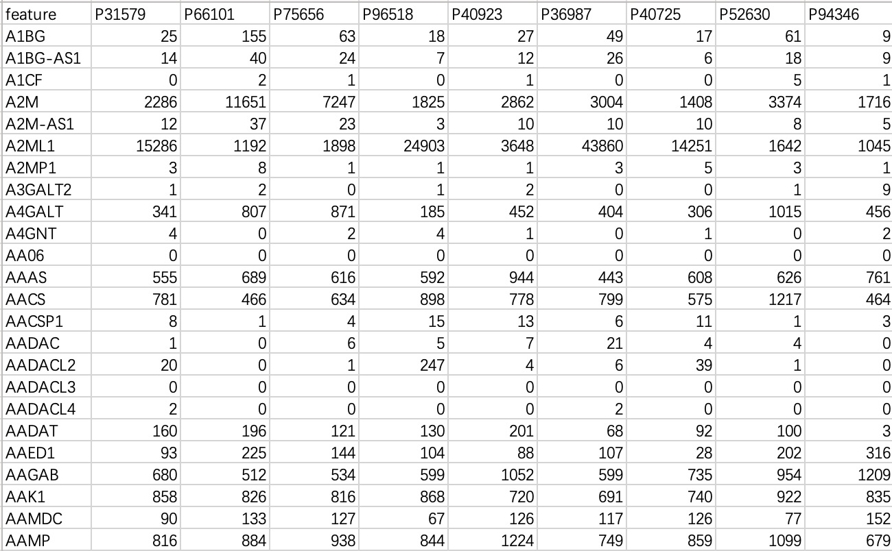
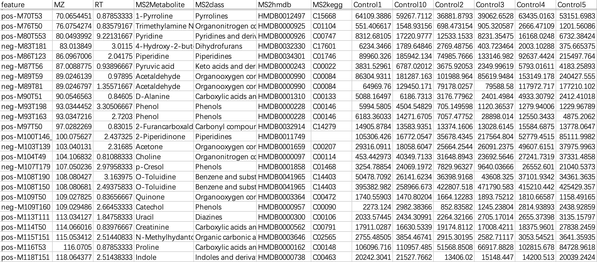

2. Create MultiAssayExperiment Object
This section illustrates how to import data from multi-omics projects into the analysis process.
2.1 Multi-omics Data
When the user processes data from multi-omics projects, the data needs to be imported and combined into a MAE object.
2.1.1 Create a relationship table of sample ID and subject ID
In the study, each subject has a unique subject ID (e.g., P1, P2, P3...), and each subject may collect a variety of biological samples and measure corresponding data, including species annotation (taxonomy) for 16s rRNA gene sequencing, KO annotation (geno_ko) for microbial functional genes, eczymatic annotation (geno_ec) for microbial functional genes, etc. When analyzing data from one or more projects, in most cases the subject ID and sample ID are the same (e.g., subject ID P1, project name taxonomy, sample ID P1). But sometimes we also face the following situations:
- Only single-omic project: the subject ID and the sample ID are inconsistent (e.g., subject ID P1, project name taxonomy, sample ID tax_1);
- Multi-omics projects: Within the same subject, sample ID of different projects are inconsistent (e.g., subject ID P1; project name taxonomy, sample ID tax_1; project name geno_ko, sample ID genomics_1).
Therefore, in order to effectively manage and analyse this data, users need to create a relationship table (usually named DFMAP, users can also customize) to match the subject ID to the sample ID. Based on the relationship table, users are able to easily import all the data into the MultiAssayExperiment object. During subsequent analysis, the EasyMultiProfiler package automatically replaces the sample ID the subject ID according to the relationship table.
The relationship table-based analysis process has the following benefits:
- Data Integration and Consistency: Relationship table ensure that the sample information in the datasets of different projects is properly mapped and integrated, thus ensuring data consistency.
- Automated processing: Data can be managed and processed automatically without manual modifications, so you don't have to worry about inconsistent naming.
- Streamlined analysis workflow: Consolidating data and automatically replacing sample ID with subject ID makes the analysis process smoother and clearer, reducing errors that can result from manual processing.
Do not confuse "Project Name", "Subject ID", and "Sample ID".
🏷️Example: Create a relationship table of subject ID and sample ID.
This table needs to be saved as a file and read into R. Users can also manually create data frame directly within R.
dfmap <- read.table('dfmap.txt',header=TRUE,sep='\t')
①The relationship table must consist of the following three columns: assay (project name), primary (subject ID), colname (sample ID).
②The sample ID (e.g., tax_1, genomics_1, etc. in this tutorial) is generated by the upstream annotation.
③The sample ID is allowed to be same as the subject ID (e.g., subject ID P1, project name taxonomy, sample ID P1).
④The sample ID (or the subject ID corresponding to the sample ID) of each project must be a subset (or identical) of the subject ID of the sample-related data. If the sample ID in the project do not correspond to the subject ID in the sample-related data, these sample ID should be excluded from these projects.
⑤The sample ID of each omics item must correspond to the colname of the relationship table one by one.
⑥For the numbering scheme of project data before and after intervention in the same group of subjects, please refer to section 10.3.
2.1.2 Precautions for reading sample-related data
Sample-related data refers to the basic information of the subject, usually including: the subject's general demographic data (gender, age, residence, etc.), anthropometric data (height, weight, waist circumference, etc.), psychological scale score results (anxiety scale, depression scale, sleep scale, etc.), test results (blood routine, liver function, inflammatory factors, etc.).
① If there are missing values in the sample-related data, please leave them blank directly without using placeholders like NA, -, missing, etc.
② Please set the first column of the sample-related data as the Sample ID, and set it as the row names when reading (important).
③ Sample ID must be unique and cannot be duplicated.
④ It is recommended to set the values of categorical variables in the data as strings rather than pure numbers to avoid unnecessary issues.
⑤ For the numbering scheme of project data before and after intervention for the same group of subjects, please refer to Chapter 10.3.
## row.names=1
meta_data <- read.table('col.txt',header = T,row.names = 1)

2.1.3 Read microbiome data
Microbiome data refers to the result files containing the abundance information of microorganisms in each sample, which are generated by various upstream microbial annotation tools. Common result files include the following five types: ASV/OTU tables, abundance tables (kingdom, phylum, class, order, family, genus and species-level), generic-level abundance tables generated by MetaPhlan and Humann, Biom files, and QZV files specific to QIIME2. The module EMP_taxonomy_import supports the input of result files in all of the above formats and converts them into SummariseExperiment objects.
2.1.3.1 ASV/OTU forms
The # characters on the first and second lines of this file do not need to be modified. The data file must contains species annotation information.
① The data file must include a column named
taxonomy.② The
taxonomy column must contain microbial annotation.③ It is recommended to use
; character to separate microbial annotations.

tax_data <- EMP_taxonomy_import('tax.txt',duplicate_feature=TRUE)
2.1.3.2 Abundance table (Kingdom, Phylum, family, genus, and species-level)
Since high-taxonomic data can be converted to low-taxonomic data (e.g., Species data can be converted to Phylum data), it is recommended that users directly import data at the highest taxonomy level.
Module
EMP_taxonomy_import has a parameter assay_name which defaults to counts (absolute abundance). If the actual data is in relative abundance, you can input relative.

tax_data <- EMP_taxonomy_import('tax.txt')
2.1.3.3 Classification annotation table for MetaPhlan and Humann
The species annotations of this annotation table have a hierarchical structure and usually contain all the result information at each level of the genus and species of the phylum family. The module EMP_taxonomy_import can automatically identify annotation information at the highest classification level and import the complete classification data.
When the input data is in this format, users need to specify the parameter
humann_format=TRUE within the module EMP_taxonomy_import.

tax_data <- EMP_taxonomy_import('tax.txt',humann_format=TRUE)
2.1.3.4 Biom format files
The biom format is a common species annotation result file in the QIIME1 process, and some users will also save the species annotation file of the QIIME2 process in biom format for data storage. The module EMP_taxonomy_import can directly read the biom format file and import the data information.
When the input data is in this format, users need to specify the parameter
file_format='biom' within the module EMP_taxonomy_import.
tax_data <- EMP_taxonomy_import('tax.biom',
file_format='biom',duplicate_feature=TRUE)
2.1.3.5 Tabular files converted from Biom format files
Biom files can be converted into tabular files using the Biom Convert method, or imported directly.
When the input data is in this format, users do not need to modify the header and # character.
tax_data <- EMP_taxonomy_import('tax.txt',duplicate_feature=TRUE)

2.1.3.6 QZV format file
In the Qiime2 process, the qiime taxa barplot generates a QZV file of microbial annotation results. The module EMP_taxonomy_import can directly read the QZV format file and import the data information.
When the input data is in this format, users need to specify the parameter
file_format='qzv' within the module EMP_taxonomy_import.
tax_data <- EMP_taxonomy_import('tax.qzv',
file_format='qzv',duplicate_feature=TRUE)
2.1.4 Read KO/EC omics data
2.1.4.1 Ordinary tabular form
KO/EC omics project data in common format refers to metagenomic or metatranscriptomic annotated result files annotated with KO or EC ID. The module EMP_function_import can directly read the annotation table and query the corresponding annotation information integrated by the KEGG database.
① In the encoding, use only pure KO and EC ID, for example: instead of KO:K00010, use only K00010; instead of ec:1.1.1.1, use only 1.1.1.1.
② Within the module
EMP_function_import, the parameter assay_name defaults to counts (absolute abundance). Users should input TPM, FPKM, etc., based on the actual data.
ko_data <- EMP_function_import('ko.txt',type = 'ko')
ec_data <- EMP_function_import('ec.txt',type = 'ec')
2.1.4.1 Humann format
KO/EC omics project data in Humann format refers to the hierarchical KO/EC annotation tables generated by the Humann tool. The module EMP_function_import ignores the information of UNGROUPED, directly reads the comment table, and queries the KEGG database to integrate the corresponding comment information.
The header of the file needs to be cleaned up and characters such as # removed.

ko_data <- EMP_function_import('ko.txt',type = 'ko',humann_format = TRUE)
2.1.5 Read standard table information
Standard tabular data usually refers to data such as transcriptome or metabolome, which has no special format and can be imported directly.
2.1.5.1 Data import without feature annotation information
This data is commonly used in transcriptome or genomic data, with "rows" as features and "columns" as samples.

tran_data <- EMP_normal_import('tran.txt')
2.1.5.2 Data import containing feature annotation information
This data is commonly used in metabolomics data, with "rows" as features and "columns" as sampleID and feature-related annotations. When importing this kind of data, users need to specify a sampleID column.
① Users can directly specify the sampleID using parameter
sampleID.② Users can directly specify the sampleID using the relationship table.

# specify the sampleID using parameter sampleID
sample_ID <-c("Control1", "Control10", "Control2", "Control3", "Control4",
"Control5", "Control6", "Control7", "Control8", "Control9",
"Treat10", "Treat1", "Treat2", "Treat3", "Treat4", "Treat5",
"Treat6", "Treat7", "Treat8", "Treat9")
metbol_data <- EMP_normal_import('metabol.txt',sampleID = sample_ID)
# specify the sampleID using the relationship table
metbol_data <- EMP_normal_import('metabol.txt',sampleID = sample_ID,
dfmap = dfmap,assay = 'untarget_metabol')
2.1.6 Integrate all data into the MultiAssayExperiment object
① In this example,
dfmap refers to the relationship table in section 2.1.1.② The
assay column in the relationship table must be converted to a factor.③ Names in
objlist must match the project names in the assay column of the relationship table.④ If assembly fails, users can check the data using the module
MultiAssayExperiment::prepMultiAssay(objlist, meta_data, dfmap).⑤ For more detailed information about the
MultiAssayExperiment package, refe to this tutorial.
#### The assay column in the relationship table must be converted to a factor
dfmap$assay <- as.factor(dfmap$assay)
#### Names in objlist must match the project names in the assay column of the relationship table
objlist <- list("taxonomy" = tax_data,
"geno_ko" = ko_data,
"geno_ec" = ec_data,
"untarget_metabol" = metbol_data,
"host_gene" = geno_data)
MAE <- MultiAssayExperiment::MultiAssayExperiment(experiments=objlist,
colData=meta_data,
sampleMap=dfmap)
2.2 Quickly create a MultiAssayExperiment object for a single-omic project
When the users only have a single-omic project data (for example, microbiome project data or transcriptomics project data), the module EMP_easy_import can be used to quickly build a MAE object and directly perform downstream analysis processes.
① The parameter
type includes four options: tax, ko, ec, and normal. Users should determine which to use based on the context.② For single-omic project where no relationship table is involved, the sampleID in the abundance matrix must match those in the associated sample data.
## row.names=1
meta_data <- read.table('col.txt',header = T,row.names = 1)
MAE <- EMP_easy_import('tran.txt',coldata = meta_data,type = 'normal')
MAE <- EMP_easy_import('tax.txt',coldata = meta_data,type = 'tax')
MAE <- EMP_easy_import('ko.txt',coldata = meta_data,type = 'ko')
2.3 MultiAssayExperiment object storage and reading
Once the MAE object has been created, it can be stored locally for direct reading during the next analysis without having to repeat the creation step.
Before storing, make sure to set R's local working directory correctly, and the data files will be stored in this working directory.
# Save in your working diectory
saveRDS(MAE,file = 'MAE.rds')
# Load the object
MAE <- readRDS(file = 'MAE.rds')